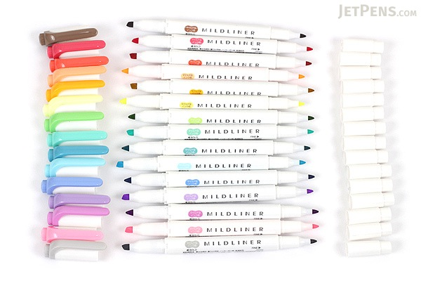
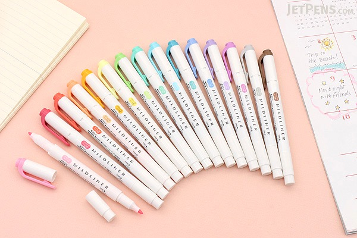
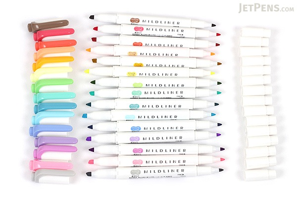
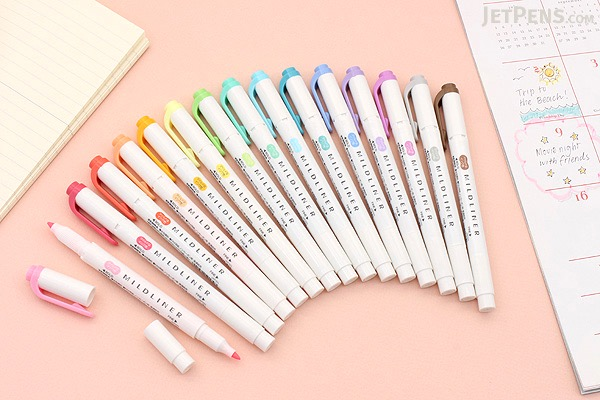
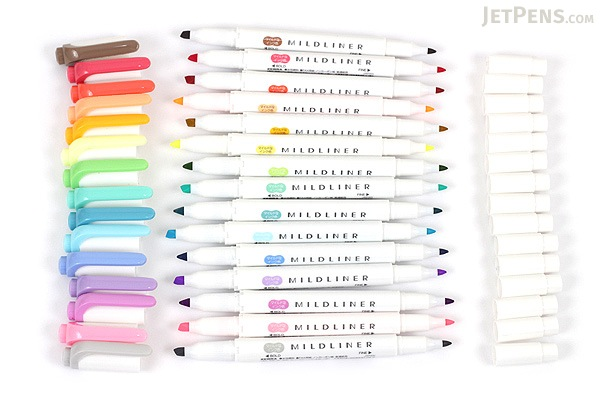
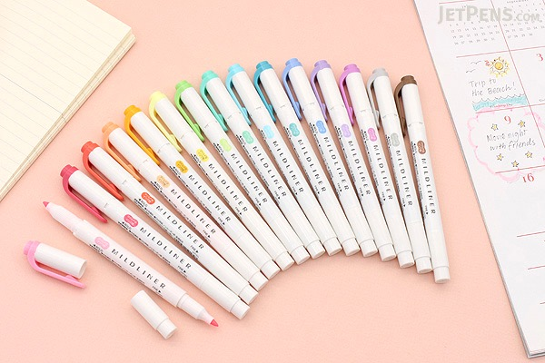

ZEBRA MILDLINER DOUBLE-SIDED HIGHLIGHTER
$1.4
☆ ☆ ☆ ☆ ☆


ZEBRA MILDLINER DOUBLE-SIDED HIGHLIGHTER
$1.4
☆ ☆ ☆ ☆ ☆
Featuring softly-colored ink, the Zebra Mildliner is perfect for the times when you want to highlight something without overwhelming everything else on the page. It features water-based ink and a convenient double-sided design—a standard chisel tip on one end for normal highlighting and a fine bullet tip on the other for underlining, circling, and writing notes.